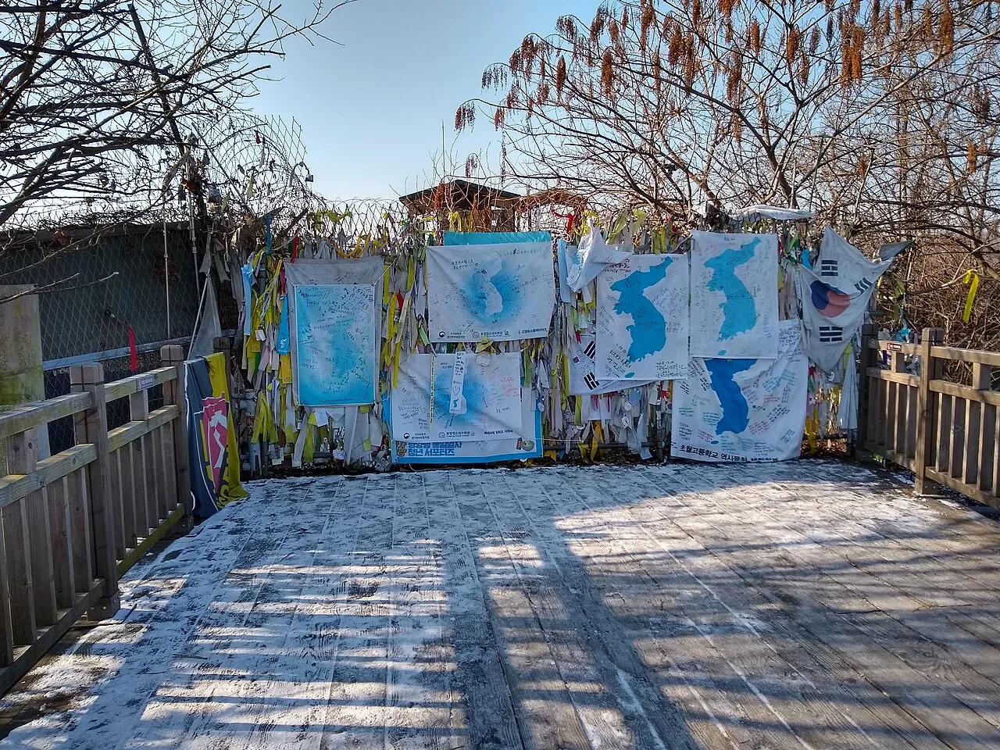
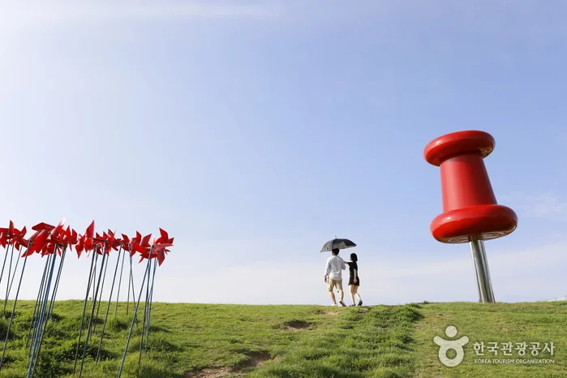
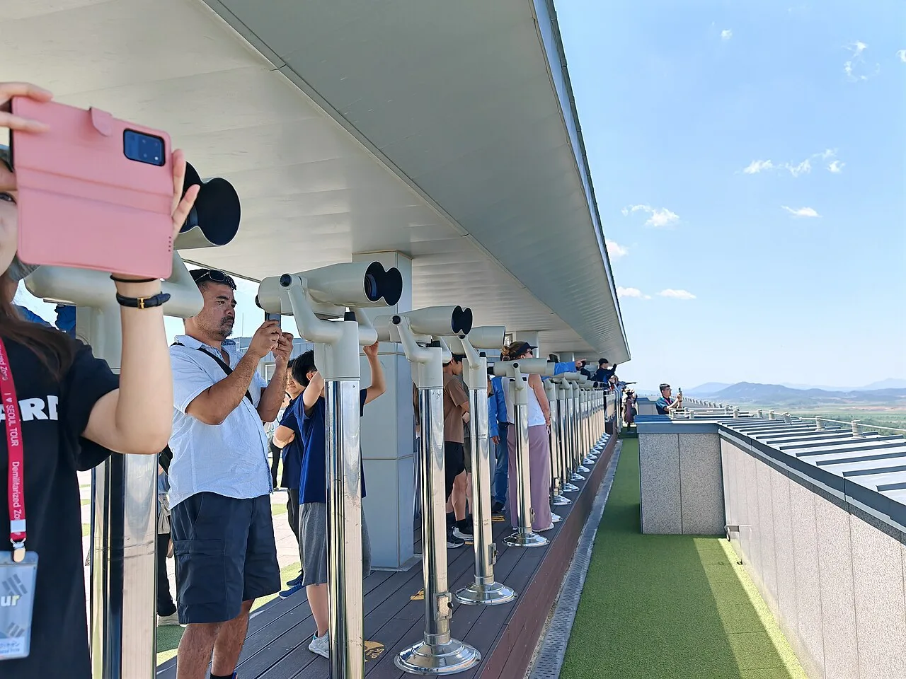
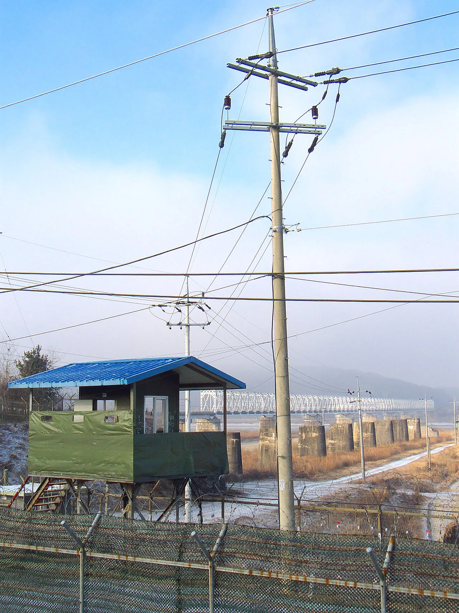

▲ 자가용으로 갈 수 있는 마지막 지점이 임진각이다. 그 안쪽은 프로그램에 따라 이동 방식이 정해진다 ⓒ Wikimedia Commons
1. 지도에는 길이 있는데 들어갈 수가 없다
내비게이션에 임진각을 찍으면 문제없이 도착합니다. 주차장도 넓습니다. 그런데 그 너머로는 차를 몰고 갈 수 없습니다.
민간인출입통제선, 이른바 민통선 때문입니다. 이 선 안쪽은 군 작전 지역이라 일반 차량의 개별 통행이 허용되지 않습니다. 관광 프로그램에 등록해야만 들어갈 수 있고, 이동 수단도 프로그램이 정합니다.
여기서 여행 계획이 꼬입니다. "차로 도라전망대까지 가서 보고 나오면 되겠지"라고 생각하면 현장에서 되돌아 나오게 됩니다. 자차 여행자가 미리 알아야 할 것은 볼거리가 아니라 어디까지 운전하고 어디서부터 차를 두는가입니다.
2. 프로그램이 두 개다
헷갈리는 이유가 여기 있습니다. 이름이 비슷한 두 가지가 따로 굴러갑니다.
| 구분 | 파주시 DMZ 평화관광 | DMZ 평화의 길 테마노선 |
|---|---|---|
| 출발 | 임진각 DMZ 매표소 | 노선별 지정 장소 |
| 이동 | 셔틀버스 | 도보 + 차량 병행 |
| 예약 | 현장 매표 | 온라인 사전예약 필수 |
| 요금 | 도보관람 4,000원부터 | 1만 원 |
둘 중 어느 쪽을 고르느냐에 따라 당일 일정이 완전히 달라집니다. 하나는 현장에 가서 표를 끊는 방식이고, 다른 하나는 8일 전에 예약을 끝내야 하는 방식입니다.
3. 파주시 DMZ 평화관광 — 현장 매표, 셔틀 이동
임진각 DMZ 매표소에서 표를 산 뒤 셔틀버스를 타고 관광하는 구조입니다.
매표 가능 시간은 09:00~14:30입니다. 오후 늦게 도착하면 그날은 들어갈 수 없습니다. 임진각까지의 주행 시간을 여기에 맞춰 역산해야 합니다.

▲ 임진각 자유의 다리 끝. 여기서부터가 일반 차량이 갈 수 없는 구간이다 ⓒ Wikimedia Commons
휴무일이 있습니다. 매주 월요일, 주중 공휴일(토·일 제외), 그리고 설과 추석 당일에는 운영하지 않습니다. 추석 연휴에 가려는 분은 이 부분을 반드시 확인해야 합니다.
신분 확인은 예외가 없습니다. 모든 출입자의 신분을 확인한 뒤 매표가 진행됩니다. 주민등록증, 운전면허증, 여권 중 하나를 반드시 챙겨야 합니다. 요금은 일반 성인 도보관람 기준 4,000원부터입니다.

▲ 임진각 평화누리. 매표 시간이 지나 셔틀을 놓쳤을 때 차를 세워둔 채 둘러볼 수 있는 구역이 여기까지다 ⓒ 한국관광공사 (공공누리 제1유형)
4. 평화의 길 테마노선 — 8일 전에 끝내야 하는 예약
파주 코스는 총 20.2~21.5km입니다. 이 가운데 걸어서 이동하는 구간은 임진각에서 통일대교까지의 생태탐방로 1.4km이고, 나머지는 차량으로 움직입니다.
| 항목 | 내용 |
|---|---|
| 운영 요일 | 수·목·금·토·일 |
| 회차 | 오전 10시 / 오후 2시 |
| 정원 | 회차당 20명 |
| 최소 인원 | 4명 (3명 이하면 자동 취소) |
| 참가비 | 1인 1만 원 |
| 예약 기한 | 방문일 8일 전(D-8)까지 |
| 연령 | 만 8세 이상 |
정원 20명은 생각보다 빡빡한 숫자입니다. 단풍철 주말이면 금방 찹니다. 반대로 최소 4명 조건도 있어서, 인원이 모자라면 예약해 둔 회차가 취소될 수 있습니다. 확정 여부를 확인하지 않고 출발하면 헛걸음이 됩니다.
신분증 규정은 여기서도 같습니다. 신분증을 지참해야 하며, 미성년자에 한해 가족관계증명서로 대체할 수 있습니다.
참가비 1만 원은 그대로 나가는 돈이 아닙니다. 경기도는 지역경제 활성화를 위해 참가비를 지역상품권이나 특산품 등으로 환급한다고 밝혔습니다. 예약은 '평화의길' 누리집과 '두루누비' 앱에서 합니다.
5. 지역마다 운영 요일이 다르다
경기도는 4개 지역에서 테마노선을 운영합니다. 요일이 제각각이라 동선을 짤 때 먼저 확인해야 합니다.
| 지역 | 운영 |
|---|---|
| 파주 | 주 4회 (목·금·토·일) |
| 고양 | 주 3회 (수·금·토) |
| 김포 | 주 3회 (금·토·일) |
| 연천 | 주 3회 (금·토·일) |

▲ 도라전망대. 개별 차량으로는 갈 수 없고 프로그램을 통해서만 접근할 수 있다 ⓒ Wikimedia Commons
수요일에 갈 수 있는 곳은 고양뿐이고, 목요일은 파주뿐입니다. "평일에 한산할 때 가야지"라고 생각했다가 운영일이 아닌 날에 도착하는 경우가 여기서 생깁니다.
참고로 강화·철원·고성·양구 등에도 별도 노선이 있습니다. 운영 주체와 조건이 지역마다 달라 한 번에 묶어 이해하기 어렵습니다. 목적지를 먼저 정하고 그 지역 규정을 따로 확인하는 편이 빠릅니다.

▲ 민통선 철책과 초소. 이 선을 기준으로 개별 차량의 통행이 갈린다 ⓒ Wikimedia Commons
6. 자차 운전자를 위한 정리
첫째, 도착 시각을 매표 마감에서 역산하십시오. 파주시 프로그램은 14:30에 매표가 끝납니다. 서울 도심에서 임진각까지 통상 1시간 30분 안팎이 걸리므로, 정체를 감안해 정오 이전 출발이 안전합니다.
둘째, 차는 임진각에 두는 것으로 계획하십시오. 안쪽 이동은 셔틀 또는 프로그램 차량입니다. 차에서 짐을 꺼내 들고 다녀야 하므로, 귀중품 정리와 겉옷을 미리 챙겨 두는 편이 낫습니다.
셋째, 신분증은 운전면허증이면 충분합니다. 어차피 운전대를 잡았다면 가지고 있을 서류입니다. 다만 동승자 전원의 신분증이 필요하다는 점이 다릅니다. 미성년자는 가족관계증명서를 미리 발급받아 가야 합니다.
넷째, 휴무일과 예약 마감을 달력에 표시하십시오. 파주시 프로그램은 월요일·주중 공휴일·설·추석 당일 휴무, 평화의 길 테마노선은 D-8 예약 마감입니다. 두 조건은 서로 다릅니다.
정리하면 이렇습니다. DMZ는 자동차로 가는 여행지 가운데 운전자가 가장 일찍 차에서 내려야 하는 곳입니다. 그래서 이곳의 여행 계획은 코스가 아니라 매표 시각과 예약 마감일에서 시작됩니다.